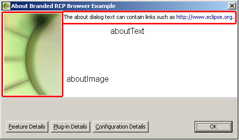

| Eclipse Corner Article |

Summary
In this article we look at how to create branding for your Eclipse-based application. Branding is how you change the high level visual elements of your product. This includes items such as the splash screen, the about dialog, and the program executable.By Andrew Eidsness and Pascal Rapicault, IBM OTI Labs
September 16, 2004
You have completed the functionality of your RCP based application but are unhappy because it still looks too much like a default Eclipse application. It is time to "brand your product," which consists of changing aspects such as the icon used by the launcher, the splash screen, the window image, and more. This article will help you to accomplish these tasks and will point you to other documents of interest.
This article has been separated into three main sections:
As you work through the steps you may notice the occasional  image. These indicate points at which you may want to test out the work you have
done thus far.
image. These indicate points at which you may want to test out the work you have
done thus far.
The steps in this document assume that you have access to the SDK build but all of the changes we described can be applied to any RCP based application. In the remaining sections we assume that you have a working knowledge of Eclipse based development. In particular we assume that you know how to provide translatable strings for your plug-in (see Locale specific files).
Make sure that you have installed the RCP Runtime Binary before continuing. You should not consider branding or productization unless you are also including your own plug-ins. In this article we use the RCP Browser Example as the target product. To help follow along with examples, you should download this plug-in from the Eclipse repository.
NOTE: This article is intended to be a guide to help you produce a release. You need to ensure that you comply with any terms and conditions of the license under which you received the platform runtime.
The branding changes we'll described are those aspects related to the
appearance of your running application. These branding elements are supplied
with the org.eclipse.core.runtime.product
extension point. This controls (among other things) the application's title bar,
the window image, and the default application. We will describe parts of this
extension point here and will return to it in the optional
branding section.
The product's title bar is controlled by the name attribute of
the product extension. Changing the browser's plugin.xml file as
highlighted below will replace the initial window title bar with your own
string.
<extension
point="org.eclipse.core.runtime.products"
id="product">
<product
name="Branded RCP Browser Example"
application="org.eclipse.ui.examples.rcp.browser.app">
<property ...
SWT allows a set of images to be associated with a shell with the expectation that all images in the set will have the same appearance but be rendered at different sizes. These images are provided to the SWT shell which is then able to select the most appropriate one for each specific use. For example, on Windows® the smaller image (16x16) will be used for the title and task bars while the larger image (32x32) will appear in the Alt-Tab application switcher.
The comma-separated list that is set in the windowImages property should have at least one image.
Making the highlighted change to theplugin.xml file will change
the icons used by the product.
<extension ...
<product ...
<property
name="windowImages"
value="icons/alt16.gif,icons/alt32.gif"/>
<property ...
SWT allows an internal name to be associated with a shell. This name is different from the one that appears in the shell's title bar -- its exact use varies depending on the window system. For example, on X-Window based systems such as motif this value is used to refer to the application in the .XDefaults file.
The value of the appName property should be set to something that clearly identifies your product. Its also a good idea to test your branding on a platform (e.g., motif) that is known to use this value.
<extension ...
<product ...
<property
name="appName"
value="BrandedRCPBrowserExample"/>
<property ...
The products extension is used to apply branding to your application but you must also provide an applications extension point. Among other thing this supplies the "main" to be run. For example the Eclipse SDK has one brand but contains several applications (e.g., the IDE, the ant runner, etc.) and for this specific case the IDE is the default application.
You must designate a specific application as the default application to be
run when some branding is selected. This is accomplished by the application
attribute in your products extension.
<extension
point="org.eclipse.core.runtime.products"
id="product">
<product
application="org.eclipse.ui.examples.rcp.browser.app"
...
In the Eclipse IDE create a new runtime-workbench launch configuration,
choose the "Run a product" option, and select org.eclipse.ui.examples.rcp.browser.product
from the dropdown.
By default the launch configuration loads all workspace and enabled external
plug-ins which may cause problems when running your application (since several
unneeded plug-ins will be included). Create a minimal set of plug-ins by
choosing the "Plug-ins" tab and selecting "Choose plug-ins and
fragments to launch from the list". Click on "Deselect All" and
then choose the org.eclipse.ui.examples.rcp.browser plug-in.
Finally click on "Add Required Plug-ins" to compute the minimal set of
plug-ins required for your application.
The images referenced in this example are already in the icons/
directory of the browser plug-in so after making the changes described in this
section you are ready to click on "Run" to launch your application.
Look for the new window images and title.
The next step in developing your overall product brand is to change the elements that appear while launching your application. This includes aspects such as using your own splash screen and changing the icon used by the Eclipse launcher.
These changes apply to the Eclipse launcher, which is not used in
self-hosting mode. That means that in order to observe these changes you will
need to have your RCP application installed on your system so that you can start
it directly. It also means that we will be changing your RCP application's config.ini
file (in the configuration area (eclipse/configuration)) rather
than any of its extension points.
If you haven't already done so then now is the time to edit the config.ini
file so that your branding is selected when your application is launched. This
is accomplished by changing the value of the eclipse.product
property as shown here.
eclipse.product = org.eclipse.ui.examples.rcp.browser.product
As described in Product branding your products
extension point should point to your applications extension point.
Setting the value of this property will select your branding as well as your
application.
The splash screen (shown while the program starts) is contained in one file that is usually found in the plug-in declaring the product. It must be called splash.bmp and must be a .BMP file. There are no constraints regarding the size but for reference the standard Eclipse splash screen image is 500x330 pixels.
The splash screen is selected based on the value of the osgi.splashPath
property as shown here.
osgi.splashPath = platform:/base/plugins/org.eclipse.ui.examples.rcp.browser
When using platform: style URLs make sure that the plug-in
referenced is in the plug-ins folder and that it is a sibling of the startup.jar.
To use NL'ed splash screens the locale specific images should be placed in a nl
directory within the plug-in's directory. For example, a splash screen for the fr_FR
locale would be placed within the plug-in's directory as nl/fr/FR,
e.g.,
org.eclipse.ui.examples.rcp.browser/
nl/
fr/
FR/
splash.bmp
Changing the icon associated with the launcher requires modification to the executable. We will also need to convert the icons into a resource that can be used by the executable.
This process varies by platform, the following sections explain the procedure
for the Windows and Linux platforms. In both cases you should start by
extracting the file eclipse/plugins/org.eclipse.platform.source_3.0.0/src/org.eclipse.platform_3.0.0/launchersrc.zip
found in the SDK. In the following sections, we will work with the library/
directory and once we are finished we will copy the resulting executable back to
the Browser application.
 Windows
executable programs can have an associated icon(s). To create our icon we first
need to replace several .BMP graphics located in the
Windows
executable programs can have an associated icon(s). To create our icon we first
need to replace several .BMP graphics located in the library
directory. These graphics represent 16x16, 32x32 and 48x48 pixel versions of
both low color and high color graphics. In the library/ directory
replace the following files:
Using an appropriate graphics tool (e.g. ICONPRO provided in the MSDN),
combine these graphics into a single .ICO (icon) file called eclipse.ico
and replace library/win32/eclipse.ico with your new eclipse.ico
file. The eclipse.ico is referenced by the file library/win32/eclipse.rc
which is automatically used when the build script is run. Once the build script
has finished we will have a new program executable with an associated icon.
 Linux does not
directly associate an icon with an executable program however we can include an
icon that users can use when associating a shortcut with the program. Use your
favorite graphics editor to create an xpm graphic representing your program icon
and place it into
Linux does not
directly associate an icon with an executable program however we can include an
icon that users can use when associating a shortcut with the program. Use your
favorite graphics editor to create an xpm graphic representing your program icon
and place it into library/icon.xpm. Once we have built the
executable we will copy both the executable and the .xpm file to
the eclipse/ root directory of the platform runtime build.
Executable icon in hand, it's time to make the executable. We will continue
to work with the library/ directory and once we have created our
executable we will copy it to the eclipse/ root directory of the
runtime platform build. The process for creating the program executable is
different and a build script is provided in each subfolder to help make the
process easier.
 In the
In the library/win32
directory you will find the build script build.bat. We will need to
edit this build file to point it to the location of your C compiler. To do this,
simply uncomment the following lines (by removing rem) and modify MSVC_HOME
to point to the root directory of your compiler installation.
rem IF NOT "%MSVC_HOME%"=="" GOTO MAKE rem set MSVC_HOME=k:\dev\products\msvc60\vc98 rem call %MSVC_HOME%\bin\vcvars32.bat
This script has been tested with Microsoft® Visual C/C++ Compiler 6.0 however it is possible that you may need to make additional modifications for your compiler.
 The Linux build
script (
The Linux build
script (build.csh) has been tested against GNU C and C++ Compiler.
You typically should not need to make any changes to the Linux build script.
The build script takes two arguments, the filename of the executable file to create (output) and the title (name) of your program. If the program name has spaces in it (as in the example below) you will need to put double-quotes around it.
In the example below the program name RCP Browser will be shown in the task bar while the program is starting.
 On Windows you
can run the build script (
On Windows you
can run the build script (build.bat) as shown below. Prior to
running the build script you should run once using the clean target
to remove any artifacts from previous builds. This example will create an
executable file named rcp browser.exe with the icon we created
above.
build -output "rcp browser.exe" -name "RCP Browser"
 On Linux you
can run the build script (
On Linux you
can run the build script (build.csh) as shown below. This example
will create an executable file named rcp browser. On Linux an icon is not
automatically associated with the executable.
csh build.csh -output "rcp browser" -name "RCP Browser"
Now that you have your own executable, you can copy it to the code>eclipse/ root directory of the browser example. It is a good idea to remove the previous executable so that the user won't be confused on which to run.
 On Linux we
also need to copy the
On Linux we
also need to copy the icon.xpm (we created above) to the eclipse/
root replacing the one already found there.
 Start your
application by running the executable you just built. Confirm that it starts
properly and that your icons, splash screen, and program name are shown during
the application launch process.
Start your
application by running the executable you just built. Confirm that it starts
properly and that your icons, splash screen, and program name are shown during
the application launch process.
Previous sections have discussed changes that all applications will want to make in order to present a customized brand. In this section we discuss some optional aspects of branding such as customizing the about dialog, applying your own default preferences, and selecting a special presentation.
Both the image and the text in the main about dialog are subject to product level branding.

These values are set from properties in your products extension
point as shown here
<extension ...
<product ...
<property
name="aboutImage"
value="icons/alt_about.gif"/>
<property
name="aboutText"
value="The about dialog text can contain links such as http://www.eclipse.org."/>
<property ...
The absolute maximum size for an the about image is 500x330 pixels. However, the value of the about text property will only be displayed if the about image is no larger than 250x300 pixels.
Although not shown in this example it is also possible to specify a set of defaults that should be used with the product. For example, the preference settings might be used to specify an alternate presentation factory. The preferences should be stored in a file which is pointed to by the preferenceCustomization property. See Eclipse Rich Client Platform for an example.
.eclipseproduct marker fileThe branding of the application would not be complete without updating eclipse/.eclipseproduct.
This marker file is a java.io.Properties format file that indicates
the name, id, and version of the product. It also controls things like the
default configuration area inside the user home folder, which ensure a
separation of the configuration information among products.
Ensure the file exists in you eclipse/ directory and contains:
name=Branded RCP Browser Example id=org.eclipse.ui.examples.rcp.browser.product version=3.0.0
A very powerful way to supply branding to your application is to create your own presentation. Supplying your own presentationFactory allows you to change all aspects of your application's UI. You can find an example of using the R21 presentation on the Eclipse RCP page.
Eclipse allows you to supply an extension point to provide a customized intro experience to users of your application. Explore the Eclipse help system for more information on how to use the org.eclipse.ui.intro extension.
Use the error log to check that all pre-requisite plug-ins were successfully
resolved. The osgi.bundles property lists the plug-ins that eclipse
installs and runs.
Typically only org.eclipse.core.runtime and org.eclipse.update.configurator
are listed. The update configurator will discover and install all plug-ins in
the plugins directory. If you aren't using org.eclipse.update.configurator
then list all necessary plug-ins in the osgi.bundles property.
A typical RCP list might look like:
osgi.bundles = org.eclipse.core.runtime@2:start, org.eclipse.core.expressions, \
org.eclipse.help, org.eclipse.jface, org.eclipse.osgi.services, \
org.eclipse.osgi, org.eclipse.swt, org.eclipse.ui.workbench, \
org.eclipse.ui, org.eclipse.swt.win32, org.eclipse.swt.gtk, \
org.eclipse.swt.gtk64, org.eclipse.swt.carbon, \
org.eclipse.swt.motif
This happens when eclipse cannot find the application to run. This could happen if the product cannot be found or the default application specified in the product extension is not found. Check for typos in both these ids.
This is most likely caused by a typo in the application id. If you are using
your product's default application then check the application attribute
in the product extension. Otherwise check the eclipse.application
property in the config.ini file. The value must match the id
defined in some application extension.
This happens when the product cannot be found check the config.ini
file for typos in the value of eclipse.product.
If changes to plugin.xml or plugin.properties are
not recognized then try running once with the -clean command line
option. This will remove stale cache files to ensure they are regenerated from
the newest information. This option is only required during development when the
plug-in manifest is changing it will not be needed when your product is
deployed.
We have shown how to replace the basic units of branding to make your product look like your own. This included such items as the splash screen, about dialog and the icon and name associated with the launcher.
org.eclipse.core.runtime.applications
extension.org.eclipse.core.runtime.products
extension.org.eclipse.ui.intro
extension.org.eclipse.ui.presentationFactory
extension.Java and all Java-based trademarks are trademarks of Sun Microsystems, Inc. in the United States, other countries, or both.
Microsoft and Windows are trademarks of Microsoft Corporation in the United States, other countries, or both.